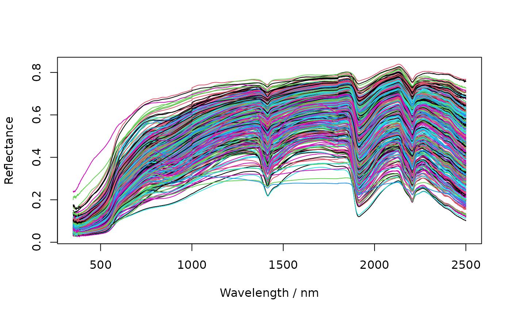

Soil spectroscopy example dataset used in the soilVAE vignettes
Source:R/datsoilspc.R
datsoilspc.RdA small soil spectroscopy dataset packaged with soilVAE for demonstrating typical spectral preprocessing (reflectance \(\rightarrow\) absorbance, resampling, SNV, smoothing) and for comparing a classic PLS baseline model against supervised VAE regression via soilVAE.
Format
A data.frame or list containing at minimum:
- spc
Numeric matrix/data.frame of reflectance spectra (samples \(\times\) wavelengths).
- TotalCarbon
Numeric vector of total carbon values.
Details
The object datsoilspc contains:
spc: a numeric matrix (or data.frame) of reflectance spectra, with rows as samples and columns as wavelengths (nm). Column names should be interpretable as numeric wavelengths.TotalCarbon: a numeric vector with the soil total carbon content for each sample.
Depending on the original source, additional columns may be present (e.g., sample identifiers or other soil properties).
The dataset is intended for examples and unit-sized demonstrations. It is not meant to be a comprehensive soil spectral library.
Examples
data("datsoilspc", package = "soilVAE")
str(datsoilspc)
#> 'data.frame': 391 obs. of 5 variables:
#> $ clay : num 49 7 56 14 53 24 9 18 33 27 ...
#> $ silt : num 10 24 17 19 7 21 9 20 13 19 ...
#> $ sand : num 42 69 27 67 40 55 83 61 54 55 ...
#> $ TotalCarbon: num 0.15 0.12 0.17 1.06 0.69 2.76 0.66 1.36 0.19 0.16 ...
#> $ spc : num [1:391, 1:2151] 0.0898 0.1677 0.0778 0.0958 0.0359 ...
#> ..- attr(*, "dimnames")=List of 2
#> .. ..$ : NULL
#> .. ..$ : chr [1:2151] "350" "351" "352" "353" ...
#> - attr(*, "na.action")= 'omit' Named int 392
#> ..- attr(*, "names")= chr "63"
# basic plot of reflectance spectra
spc <- as.matrix(datsoilspc$spc)
wav <- as.numeric(colnames(spc))
matplot(wav, t(spc), type = "l", lty = 1,
xlab = "Wavelength / nm", ylab = "Reflectance")
